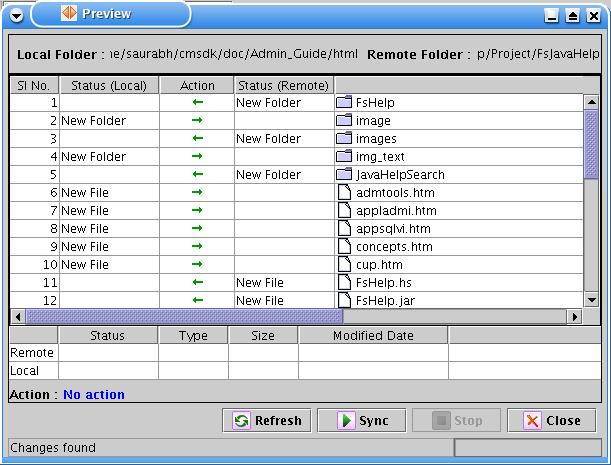

After completing a profile creation user needs to run that profile to perform synchronization. Following are the steps to execute a profile.
Select a profile to be executed from the list of existing profiles or create one with desired requirement.
Click on the 'Run' icon [ ] which will prompt a window which shows the differences in the contents of local and remote folder.
